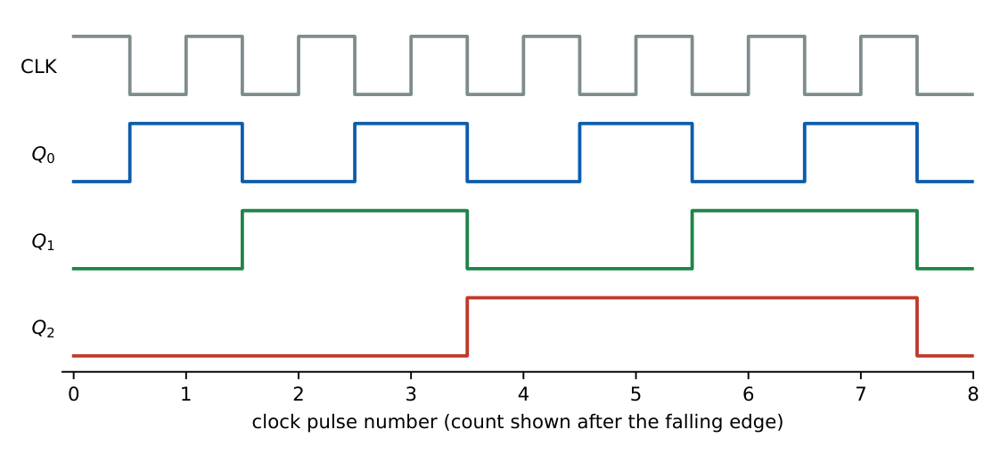

Counters and Shift Registers
In this chapter
Modulus and flip-flop count, ripple versus synchronous counters and their maximum clock frequency, modulo-\(N\) design by reset, ring and Johnson counters, sequence generation by excitation tables, LFSRs and shift-register operations.
8.1 Asynchronous (ripple) counters
In a ripple counter only the first flip-flop receives the external clock; each subsequent stage is clocked by the output of the previous one. With T flip-flops (\(T=1\)) triggered on the falling edge and clocked from \(Q\), the counter counts up; clocked from \(\overline Q\) it counts down (the reverse holds for rising-edge devices).

An \(n\)-flip-flop counter has modulus \(2^n\) and divides the clock by \(2^n\); the MSB output has frequency \(f_{clk}/2^n\).
Delays accumulate: the settled output requires \(n\,t_{pd}\), so the clock period must satisfy \(T_{clk}\ge n\,t_{pd}\) if the count is to be read without glitches: \(f_{max}\approx\dfrac{1}{n\,t_{pd}}\).
Number of flip-flops for modulus \(N\): \(n=\lceil\log_2 N\rceil\).
8.1.1 Modulo-\(N\) ripple counter (reset method)
Let the counter run to \(N\) and then clear all flip-flops asynchronously. For MOD-6 (states 0–5) detect \(N=6=110_2\) with a NAND of \(Q_2\) and \(Q_1\) feeding the active-low CLEAR. The state 110 exists only momentarily (a glitch) before reset: such counters are not suited to decoding that state.
Four flip-flops, reset when \(Q_3Q_1=1\) (count 1010 = 10). Sequence 0–9; the state 1010 appears for about \(t_{pd}\) of the reset gate.
Cascading MOD-\(m\) and MOD-\(n\) counters gives MOD-\(mn\): MOD-6 followed by MOD-10 divides by 60 (seconds/minutes).
8.2 Synchronous counters
All flip-flops are clocked simultaneously, and the combinational logic computes each next state. For an \(n\)-bit binary up counter with T (or J=K) flip-flops: \[ T_0=1,\quad T_1=Q_0,\quad T_2=Q_1Q_0,\quad T_i=Q_{i-1}Q_{i-2}\cdots Q_0 . \] For a down counter use \(\overline Q\) instead of \(Q\).
\(T_{clk}\ge t_{cq}+t_{logic}+t_{su}\), where \(t_{logic}\) is the delay of the AND/XOR logic ahead of the slowest flip-flop. For a synchronous counter this is independent of \(n\) if wide AND gates are available, otherwise it grows with the AND chain.
Synchronous counters are faster and glitch-free (all outputs change after \(t_{cq}\)), at the cost of extra gates.
8.2.1 Designing a synchronous counter
- Draw the state table (present state \(\to\) next state) for the required sequence; unused states are don’t-cares.
- For each transition, read the flip-flop inputs from the excitation table.
- Minimise each input with K-maps (using the unused states as don’t-cares).
- Check the unused states: does the counter reach the main sequence (self-starting) or lock out?
Count \(0\to1\to2\to3\to4\to0\) (MOD-5, three flip-flops \(Q_2Q_1Q_0\), unused 5,6,7 are don’t-cares).
Transitions: \(000\to001,\ 001\to010,\ 010\to011,\ 011\to100,\ 100\to000\).
From the JK excitation table: \(J_0=\overline{Q_2}\) (as \(K_0=1\)), \(J_1=Q_0\), \(K_1=Q_0\), \(J_2=Q_1Q_0\), \(K_2=1\).
Check \(011\to100\): \(J_2=1\Rightarrow Q_2:0\to1\); \(K_1=Q_0=1\Rightarrow Q_1:1\to0\); \(K_0=1\Rightarrow Q_0:1\to0\). \(\checkmark\)
Lock-out check: \(101\to010\), \(110\to010\), \(111\to000\), so every unused state enters the main sequence (self-starting).
8.3 Ring and Johnson counters
| Ring counter | Johnson (twisted-ring) counter | |
|---|---|---|
| Feedback | \(Q_{n-1}\to D_0\) | \(\overline{Q_{n-1}}\to D_0\) |
| States used | \(n\) | \(2n\) |
| Flip-flops for MOD-\(N\) | \(N\) | \(N/2\) |
| Decoding | none (one-hot) | 2-input AND per state |
| Self-start | needs preset (one-hot start) | may enter unused cycles |
A 4-bit Johnson counter (shift right, feedback \(\overline{Q_0}\to D_3\)) cycles \(0000,1000,1100,1110,1111,0111,0011,0001\): 8 states, one bit changes per clock (no decoding glitches). A 4-bit ring counter initialised to 1000 cycles through 4 states.
8.4 Shift registers
A shift register is a chain of D flip-flops; on each clock the stored word moves one position.
| Type | Use |
|---|---|
| SISO | delay line; \(n\) clocks delay |
| SIPO | serial-to-parallel conversion (receiver) |
| PISO | parallel-to-serial conversion (transmitter); needs load/shift control |
| PIPO | storage register |
| Universal | shift left/right, parallel load, hold (4:1 MUX per stage) |
Shifting a binary number left by one position multiplies it by 2; shifting right divides by 2 (arithmetic shift preserves the sign bit). To shift in a serial word of \(n\) bits requires \(n\) clock pulses; a serial adder uses one FA and one carry flip-flop and takes \(n\) cycles.
8.4.1 Linear-feedback shift register (LFSR)
An \(n\)-bit shift register with an XOR feedback of selected taps generates pseudo-random sequences. With a primitive polynomial the period is \(2^n-1\) (all states except all-zeros, which is a lock-up state for XOR feedback).
3 bits, shift left, new bit \(=Q_2\oplus Q_1\), seed \(001\): \(001\to010\to101\to011\to111\to110\to100\to001\) (period \(7=2^3-1\)). A 4-bit LFSR with taps \(Q_3\oplus Q_2\) (polynomial \(x^4+x^3+1\)) has period 15. LFSRs are used for CRC, scramblers and built-in self-test.
(i) A ripple counter cannot be clocked as fast as a synchronous one; decoded outputs can glitch. (ii) A MOD-\(N\) counter by reset passes through state \(N\) briefly. (iii) A Johnson counter has \(2n\) states but may have invalid cycles if not self-correcting. (iv) A 4-bit register cannot count mod 17.
Johnson with \(n\) flip-flops: MOD \(2n\). Ring: MOD \(n\). Binary: MOD \(2^n\). LFSR (primitive): MOD \(2^n-1\). Cascaded counters multiply moduli. Use T inputs \(T_i=\prod_{j<i}Q_j\) for synchronous up counters.
8.5 GATE problems
Q1. The number of flip-flops needed for a MOD-37 counter: (A) 5 (B) 6 (C) 7 (D) 37.
Q2. A 5-bit Johnson counter has (A) 5 states (B) 10 states (C) 31 states (D) 32 states.
Q3. A ring counter with 8 flip-flops has modulus (A) 8 (B) 16 (C) 255 (D) 256.
Q4. Maximum possible period of an 8-bit XOR-feedback LFSR: (A) 8 (B) 255 (C) 256 (D) 128.
Answers: Q1 (B): \(2^6=64\ge37\). Q2 (B). Q3 (A). Q4 (B).
Q5. A 3-bit ripple counter uses flip-flops with \(t_{pd}=15\,\)ns. The maximum clock frequency for a stable count (MHz, using \(f=1/(n\,t_{pd})\)) is approximately (A) 66.7 (B) 22.2 (C) 15 (D) 8.3.
Q6. Two counters, MOD-12 and MOD-10, are cascaded (the second clocked once per full cycle of the first). The overall modulus is (A) 22 (B) 120 (C) 100 (D) 12.
Q7. A synchronous counter uses JK flip-flops with \(J_2=K_2=Q_1Q_0\), \(J_1=K_1=Q_0\), \(J_0=K_0=1\). The sequence from 011 is (A) 100 (B) 010 (C) 111 (D) 000.
Answers: Q5 (B): \(1/(3\times15\text{ ns})=22.2\) MHz. Q6 (B). Q7 (A): \(Q_2\) toggles (\(Q_1Q_0=1\)), \(Q_1\) toggles, \(Q_0\) toggles: \(011\to100\).
Q8. A synchronous counter: \(t_{cq}=5\,\)ns, AND-gate delay \(=4\,\)ns (one level), \(t_{su}=3\,\)ns. Maximum clock frequency (MHz, two decimals): .
Q9. A 4-bit Johnson counter is clocked at \(1\,\)MHz. Frequency of any output (kHz): .
Q10. Minimum number of flip-flops for a Johnson counter that must count 18 states: .
Answers: Q8: \(T=5+4+3=12\) ns \(\Rightarrow83.33\) MHz. Q9: the pattern repeats every \(2n=8\) clocks, so \(1000/8=125\) kHz. Q10: \(18/2=9\).
Q11. Which statements are true? (A) Johnson counters have only one bit change per clock. (B) Ring counters are one-hot. (C) A ripple counter’s propagation delay is independent of \(n\). (D) An LFSR with XOR feedback cannot reach all-zeros from a non-zero seed.
Answers: Q11: (A), (B), (D).
T1. Moduli of 4-bit binary, ring and Johnson counters? T2. T inputs of a 4-bit synchronous up counter? T3. Reset condition for MOD-6 (async)?
Answers: T1: 16, 4, 8. T2: \(T_0=1,T_1=Q_0,T_2=Q_1Q_0,T_3=Q_2Q_1Q_0\). T3: \(Q_2Q_1=1\) (state 110).
- Ripple: modulus \(2^n\), \(f_{max}=1/(nt_{pd})\); synchronous: \(T\ge t_{cq}+t_{logic}+t_{su}\).
- MOD-\(N\): \(\lceil\log_2N\rceil\) FFs; cascade multiplies; reset counters glitch.
- Ring \(n\), Johnson \(2n\), LFSR \(2^n-1\).
- Design: state table \(\to\) excitation table \(\to\) K-map \(\to\) lock-out check.